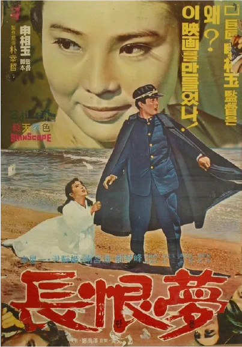
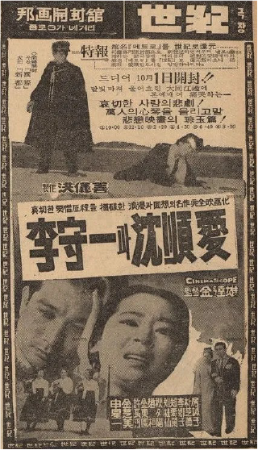
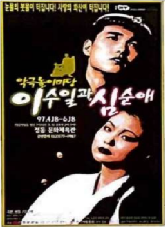
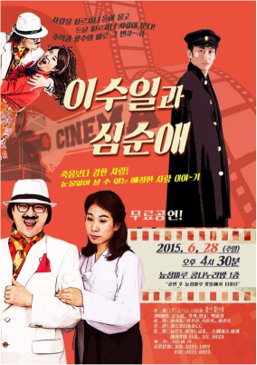
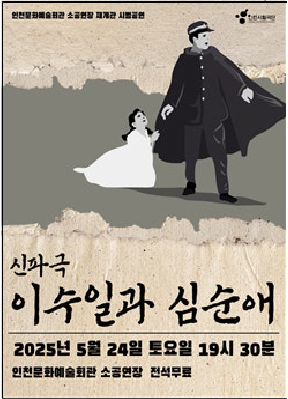

"황금만능주의에 짓밟힌 두 남녀의 비극적인 사랑"
놓아라, 이 손을 놓지 못할까!
김중배의 번쩍이는 다이아몬드 반지가
그렇게도 좋아서 나를 짓밟고 가더니,
이제 와서 눈물은 왜 흘려!
순애야, 내년 이 밤
내 가슴에 피눈물이 고일 때
너는 내 무덤 앞에서
땅을 치며 통곡할 것이다.
"원망도 많았고 눈물도 강을 이뤘지만, 흘러간 세월 앞에 다 무슨 소용이겠습니까. 그저 그 시절 우리 모두가 아팠던 것을요."
"돈으로 산 사랑은 모래성처럼 허무한 것을 왜 이제야 알았단 말인가. 수일 씨, 당신의 용서를 받지 못한다면 이 세상에 내가 살아 숨 쉴 곳은 어디에도 없습니다. 차라리 대동강 푸른 물에 이 한 목숨 던져 죄를 씻겠습니다."